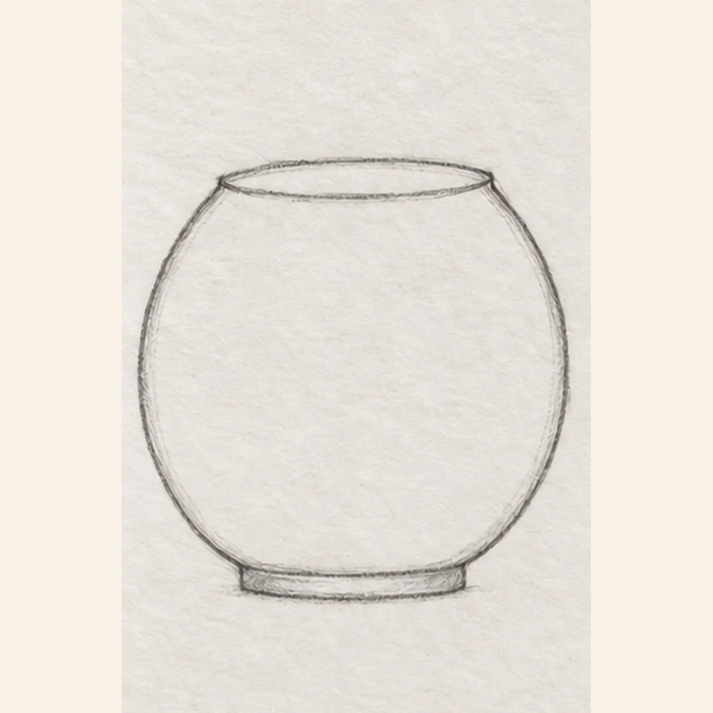
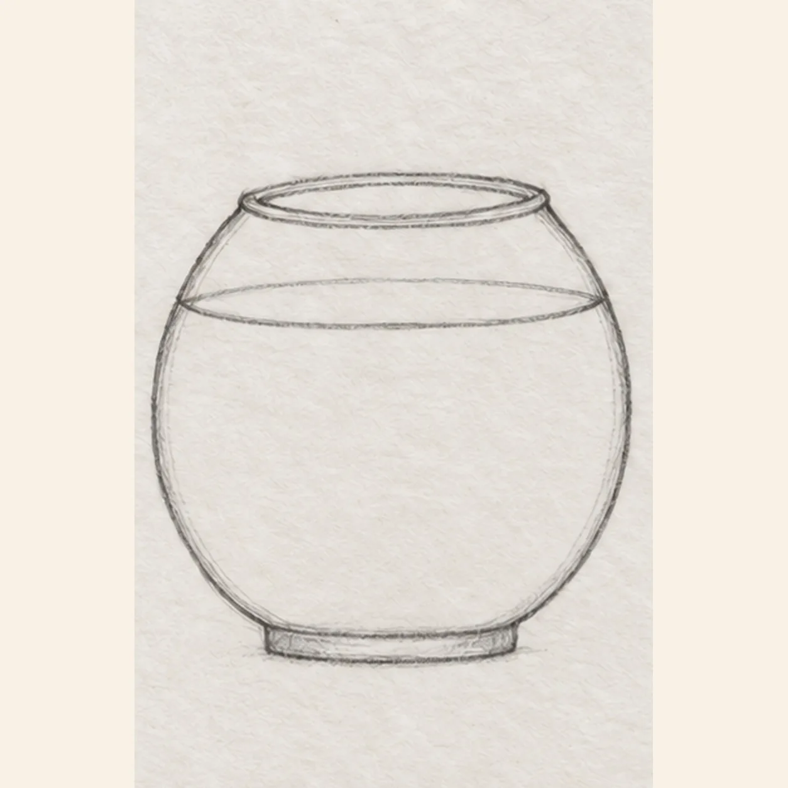
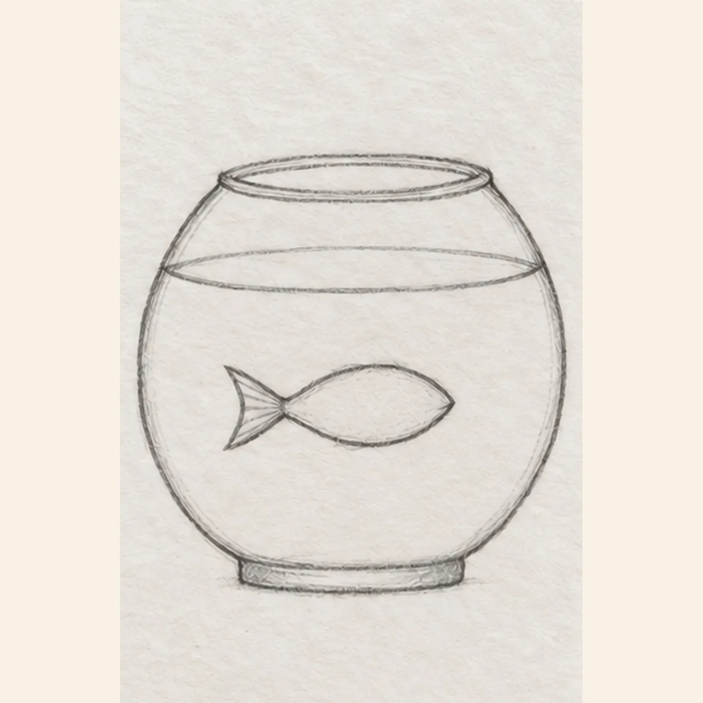
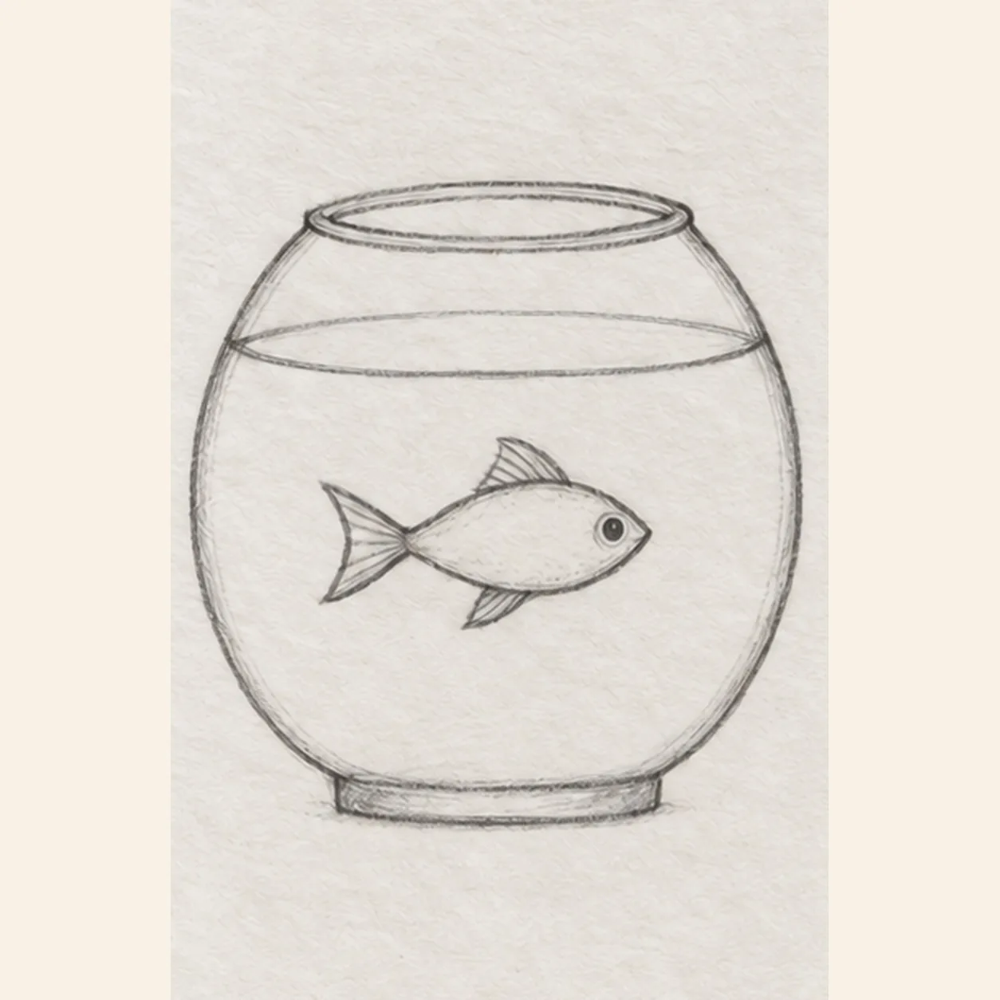
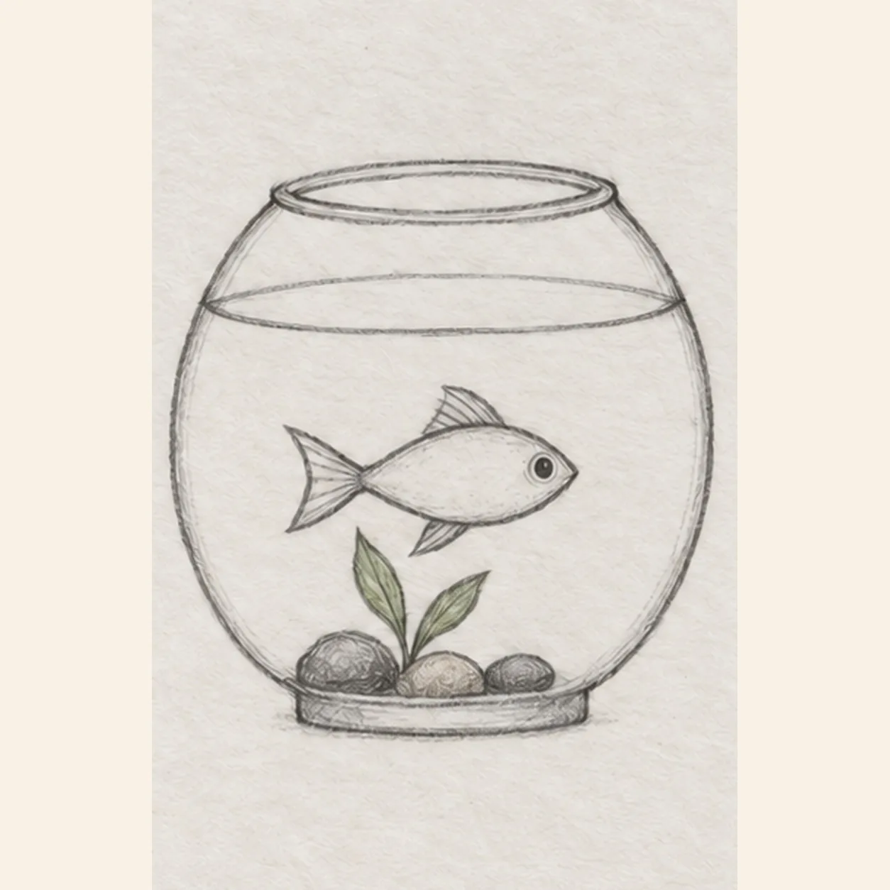

From the archive
Let's draw a fishbowl with one goldfish
Treat this as one small practice round: build the subject lightly, notice the shapes, then darken only the lines that help the finished sketch.
-
01

Shape the glass bowl
Set a shallow horizontal oval high on the page. From its left and right ends, bow two glass sides outward and bring them down to a short flat base.
Sketch tip: Keep the opening shallow and leave enough room below it for one fish and a small plant.
-
02

Set the water level
Draw one gentle waterline across the upper third of the bowl, touching the inside glass sides. Echo the top oval with a close, light inner rim.
Sketch tip: The waterline meets both glass sides at the same height; keep it below the upper rim.
-
03

Place one fish
Below the waterline, draw one small oval pointing right. From its left end, open a forked tail into the empty left side of the bowl.
Sketch tip: Leave enough space between the fish and glass for its forked tail.
-
04

Finish the fish shape
Raise a small dorsal fin from the fish's top edge and hang one lower fin below its belly. Put one dark eye near the right tip without moving the body or tail.
Sketch tip: Attach both fins to the existing body and keep the single eye near its pointed nose.
-
05

Ground the bowl
Along the bowl floor, draw three separate round pebbles. From the gap beside them, raise one short plant stem and branch it into exactly two leaves below the fish. Tint those leaves lightly green.
Sketch tip: Count three separate stones and two leaves before adding any more marks.
-
06
Shade the fishbowl
Tint the existing water pale blue, the fish warm orange, and the two plant leaves muted green. Deepen the same glass rim, three pebbles, and base with light graphite; leave paper highlights on the bowl.
Sketch tip: Use short, light pencil strokes so the fish remains clear against the blue water.